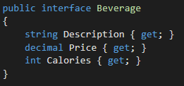
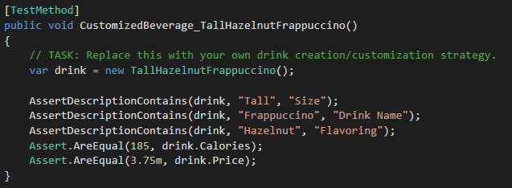
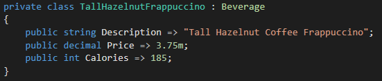
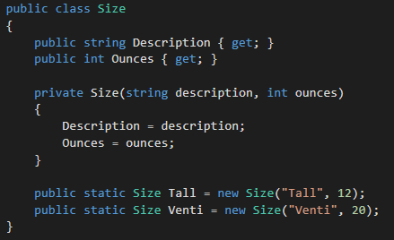
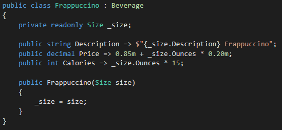
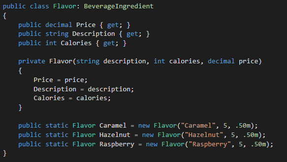
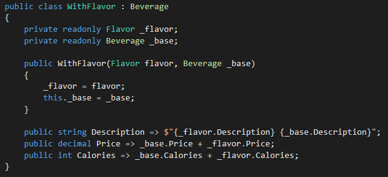
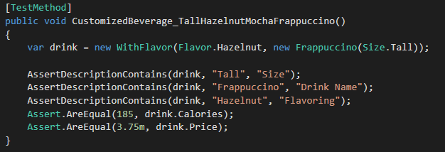

Design Patterns: Decorator
The Decorator Pattern is a way of structuring code where a base interface or class can be dynamically altered to have additional functionality or responsibility.
Imagine writing a Starbucks Menu application, where you must be able to determine the calories and price of a variety of drinks as well as submit the order to the barista. Instead of creating a variety of specific constructors such as HazelnutLatte, VentiCaramelFrappucino, TallSoyMilk, etc. you can have every possible drink be constructed from a single type of drink and then apply different characteristics to it.
The following solution is the base exercise used within the rest of the post and this source code/exercise was presented to me by Silas Reinagel:
Download the Decorator Pattern Exercise
Exercise
For the purposes of this exercise the only parts of a beverage we care about are its Description, Price, and Calories. We will also assume that the Description is only used by the barista so the order of a drinks attributes are unimportant; a Venti Hazelnut Latte with Extra Whip Cream is equivalent to Latte Venti Hazelnut with Extra Whip Cream.
In the initial version of our application we have a test suite and some hyper specific classes. However, if we ever want to add a new type of beverage we will have to define an entirely new class.

Instead of using TallHazelnutFrappuccino we can create a very generic base class of Frappucinnos and then allow it to be “decorated” with new attributes as well as other types of Beverages.
First, we’ll define Size. All drinks must be defined with a size and they must use one of the predefined sizes of Tall or Venti. This is why we make the constructor private in order to prevent drinks from having custom sizes.
Our Frappuccino class will use the Beverage interface and then use the size it's provided to determine its calories, price, description.
Next, we will define Flavor in the same way we created Size by both privatizing the constructor and providing static Flavors that any beverage can use. The BeverageIngredient interface is equivalent to the Beverage interface but will allow us to expand on a Beverage in the future without affecting the Flavor.
Now we can define WithFlavor as a class that will take any Beverage and then add a flavor’s calories, price, and description to it. After all of this setup we can now define any kind of flavored drink and more specifically alter the initial test to use the Decorator Design.
Instead of using the very specific TallHazelnutFrappuccino class we can define it in the same way using our new generic classes. While the name is longer we can now define any combination of flavoring and size for our frappuccinos and other beverage types we add in the future.
Conclusion
The Decorator Pattern is a beautiful method for giving us the ability to easily maintain and update our beverage application. For example, let’s say we want to increase the price of Caramel Flavoring. Instead of editing all of our classes that use Caramel, all we have to do is edit the static Caramel Flavor’s price and it will in effect update all of our other drinks. We can also expand our beverage catalogue in the same way. We can add Latte as a base beverage as well, and as long as it extends the beverage interface we can now apply the same flavorings to it as well.
Our code is now easier to maintain and easier to create new, dynamic beverages. There is also the option to expand the ways we can decorate beverages. We can have whip cream options, milk replacements, and discounts apply in the same structure as flavoring which will rapidly expand the amount of beverages we can service.
If this kind of structure seems interesting to you I highly recommend attempting to solve the other test cases as well as taking a look at the full solution below:
Download the Decorator Pattern Solution